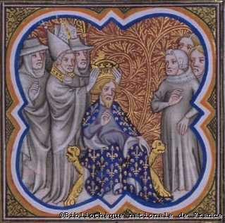

Charlemagne
Introduction
Avec la bénédiction du pape, les maires du palais ont usurpé le trône aux derniers Mérovingiens, « les rois fainéants ». Pépin le Bref devenu roi des Francs en 751, parvient à restaurer l’unité du royaume. Avec la reine Bertrade « Berthe au Grand Pied », la fille du comte de Laon, un puissant seigneur de l’époque, Pépin a deux fils : Charles et Carloman. Très vite l’aîné Charles s’impose et annonce son style, il se fera appeler « le Grand », et deviendra l’un des plus grands souverains de France qui marqua toute la période du Haut Moyen Âge.
De grandes conquêtes
La lutte des deux frères
A la mort du roi franc en 768, les premières difficultés apparaissent, les deux frères, Carloman et Charles ne s’entendent guère, le partage était dès lors prometteur de discorde. Selon les vœux de Pépin :
- Charles obtenait l’Austrasie et le Nord de la Neustrie, il se fit sacrer roi à Noyon.
- Carloman obtenait le Sud de la Neustrie, la Bourgogne et la Provence, il siégeait à Soissons.
En 769, l’Aquitaine se révolte, Charles demande l’aide de son frère, qui lui refuse. Charles prend alors la poursuite du duc d’Aquitaine et parvient à rétablir l’ordre en menaçant les Gascons (Basques) qui lui livrent finalement le duc rebelle. Mais en 770, c’est la Lombardie qui apparaît plus menaçante, la veuve de Pépin, Bertrade organise un mariage entre Charles et Désirée la fille du roi des Lombards. Mais les deux frères ne s’entendent toujours pas, et c’est finalement la mort de Carloman en 771 qui va tout changer. Charles destitue l’héritage de ses neveux qui s’enfuient avec Gerberge, la femme de Carloman, vers la cour lombarde (Gerberge est la fille du roi lombard). Charles est désormais roi unique des Francs.

Détail d'une mosaïque de la cathédrale de Strasbourg
La conquête de la Lombardie
Les relations entre Didier, le roi des Lombards et le jeune roi franc se dégradèrent très vite, Charles avait répudié Désirée qui était très laide. Le pape Adrien Ier se réjouissait de cette opportunité, comme l’avait fait son prédécesseur, il demanda de l’aide auprès du roi franc. Charles avait un grand intérêt à soumettre les Lombards, menace constante, d’autant que leur roi Didier voulait réhabiliter les fils de Carloman, réfugiés à sa cour, sur le royaume franc. Charles traversa alors les Alpes avec son armée, défit les Lombards qui se réfugièrent dans la ville de Pavie, capitale du royaume. En 774, la ville tombe et Charles prit le titre de « roi des Francs et des Lombards », il fit alors son entrée triomphale dans la capitale coiffé de la célèbre couronne de fer, dont le fermoir, selon la légende, a été forgé avec un clou de la Vraie Croix du Christ.
Les Saxons, des adversaires irréductibles
Tout au long de son règne, les difficultés les plus conséquentes auxquelles Charles devra faire face sont liées aux Saxons, un peuple païen aussi irréductible face à l’épée qu’à l’appel de l’Évangile, qui vivait sur les territoires devenus aujourd’hui les Flandres et la Lorraine en plus de leur terre d’origine la Saxe, l’actuelle Allemagne. Il fallut à Charlemagne (du latin Carolus Magnus, Charles le Grand) près d’un quart de siècle pour les soumettre totalement. Les Saxons, qui avaient promis des concessions, profitèrent de la campagne de Lombardie pour se révolter de nouveau. Mais les Saxons sont de nouveau battus et promettent finalement leur conversion au christianisme, Charlemagne rentre avec son lot d’otages saxons. Malgré tout, les révoltes n’en continuèrent pas moins…
Bibliothèque nationale de Turin
Contre les Maures
Depuis près d’un siècle, la chrétienté se voyait menacé par les Maures qui occupaient encore toute l’Espagne. Pour le pape, comme tous les chrétiens, il revenait à Charlemagne de se défendre contre ce danger permanent. Charlemagne n’avait pas l’intention de conquérir l’Espagne, il avait conscience du décalage économique et culturel des deux mondes, de plus il admirait la civilisation islamique, très avancée sur le commerce, l’artisanat, les sciences et les arts. Toujours est-il que Charlemagne envahit la Catalogne et pris la ville de Pampelune. Puis le gros de l’armée se replia pour rejoindre la Germanie, car les Saxons s’étaient de nouveau rebellés. L’arrière-garde qui protégeait le repli s’engagea alors dans les vallées pyrénéennes. Elle était commandée par Roland, comte de Bretagne, un valeureux guerrier très aimé de Charlemagne. Le 15 août 778, comme elle se trouvait dans l’étroit passage du col de Roncevaux, les Gascons (Basques) dévalèrent du haut des montagnes et massacrèrent la troupe franque. « Ce cruel revers, nous dit un chroniqueur du temps, effaça presque entièrement dans le cœur du roi la joie des succès qu’il avait eus en Espagne. » Cet événement devint le fait d’armes le plus connu du règne grâce à un grand poème écrit vers la fin du Xe siècle, la Chanson de Roland. Charlemagne se contenta dès lors d’occuper des places fortes en Catalogne.
La Chanson de Roland
Ce paragraphe décrit l’histoire du poème épique rédigé àdi la fin du XIe siècle (début des Croisades) où les Basques de Roncevaux ont été remplacés par des Sarrasins. Ganelon le beau-père de Roland, désireux de se venger de celui-ci ainsi que des onze pairs qui lui vouent un véritable culte, s’entretient avec Marsile, un roi sarrasin, et lui donne toutes les informations qui permettront d’exterminer l’arrière-garde de Charlemagne. Roland est nommé à la tête de cette arrière-garde, avec ses onze pairs dont Olivier, comte de Genève et meilleur ami de Roland. Charlemagne a dès lors un sombre pressentiment. Marsile a réuni 400 000 hommes, qui se rue sur les 20 000 Francs, enclavés dans le col de Roncevaux. Par fierté, Roland refuse alors de sonner l’olifant (cor) pour rappeler Charlemagne. La première vague de Sarrasins (100 000 hommes) est contrée et exterminée. Mais au bout du cinquième assaut, les Francs ne sont plus que 60. Roland se décide alors à sonner de l’olifant, Charlemagne l’entend mais Ganelon le dissuade d’en prendre compte. La bataille continue, Roland tranche la main de Marsile qui s’enfuit. Olivier mortellement blessé meurt dans les bras de Roland. Roland reste seul avec son ami Turpin qui sont soudain assaillis par 400 sarrasins qui les criblent de flèches avant de s’enfuir. Mourant Roland tente en vain de briser son épée, la vaillante Durandal, qui brise un roc. Roland se couche alors le visage tourné vers l’Espagne et s’en remet à Dieu. Charlemagne très affecté condamne le traître Ganelon, symbole de la félonie. La fiancée de Roland, Aude, meurt de chagrin. Le poème fait une grande part au merveilleux chrétien et à l’amour des preux chevaliers pour la « douce France ».

Roland à Roncevaux (778) – H. Grobet, Histoire de France, Paris (Emile Guérin), 1902
Des difficultés en Germanie
Les intraitables saxons se sont de nouveau soulevés, ils ont ravagé le territoire franc jusqu’à la Moselle. Charlemagne organise donc une sévère répression. Mais les révoltes n’en continuèrent pas moins. En 782, un chef saxon, Widukind, réussit à décimer une armée saxonne ralliée aux Francs et à se réfugier ensuite en territoire danois. Charlemagne avait la ferme intention d’annexer la Saxe à sa couronne, mais pour ce faire il devait faire plier les Saxons. Chose qui devient moins aisée à mesure que les païens appliquaient les tactiques militaires chrétiennes. Par représailles, Charles décida de se livrer à un épouvantable massacre, près de Verdun, ce sont 4 500 Saxons qui furent exécutés, femmes et enfants ne furent épargnés.
Les conquêtes en Europe centrale
- Le soulèvement des Saxons encouragea par ailleurs le duc de Bavière, Tassilon III qui, en 779, refusa de reconnaître la souveraineté franque et fut sur le point de semer le trouble dans toute la partie Sud de la Germanie occupée par les Francs. Mais abandonné par ses sujets, Tassilon est finalement battu et emprisonné. La Bavière est ainsi intégrée au royaume en 788. Charlemagne confisqua les biens immenses de Tassilon, qui était considéré comme « l’homme le plus riche de l’Empire », plus que Charlemagne lui-même qui de surcroît, n’a jamais eu de fortune personnelle et fut un des premiers rois de l’époque médiévale à distinguer le Trésor Royal et ses biens propres.
- Puis, après la Bavière, Charles affronta les Avars, une peuplade belliqueuse d’origine mongole, comme les Huns, qui était établie en Pannonie (actuelle Hongrie). La guerre contre les Avars fut sans pitié. Charlemagne répondit à la férocité de l’ennemi par une férocité égale. L’affrontement se termina par la prise du camp royal avar par Pépin, le fils de Charlemagne. Leurs terres furent placées sous le contrôle des Francs, puis christianisés. Un traitement analogue fut réservé aux Slaves de Bohème. A la suite de ces conquêtes, les territoires de Germanie, de Hongrie, de Bohème et d’une partie de la Yougoslavie furent arrachés à l’emprise barbare.
Empereur
Le sacre de Charlemagne
Les relations entre Charlemagne et le pape Adrien Ier n’étaient pas si exemplaires, la Toscane et toute l’Italie du Sud était promise au pape, mais le souverain franc préférait imposer sa propre domination sur l’Italie. L’indépendance des États du pape était de plus en plus fictive. Malgré tout, Charles est soucieux de sa construction politique, et il sait que le facteur religieux est essentiel. Aussi, lorsque le nouveau pape Léon III est emprisonné en 799 et roué de coups par des nobles qui l’accusent d’immoralité, Charlemagne intervient et assure le retour du pape à Rome sous bonne escorte. En remerciement de service rendu, notamment contre les Lombards, Charlemagne prend le titre inédit d’« Empereur des Romains ». La cérémonie se déroule à la basilique Saint-Pierre de Rome le 25 décembre 800. Il se présente de façon symbolique en continuateur lointain de l’empire romain d’Occident. C’est ainsi qu’il arbore comme emblème l’aigle monocéphale.
Bibliothèque nationale de France
La conquête de la Germanie
La tâche la plus ardue pour Charlemagne était de soumettre définitivement les Saxons afin de rattacher la Germanie à l’Empire, et de la pacifier. En 785, le chef barbare, Widukind, tombe malade, il fut alors obligé de céder son commandement. Dès lors les campagnes saxonnes ne furent plus aussi dures ni aussi laborieuses pour les Francs qui finirent par gagner en 799. Mais guérillas, répressions et déportations en masse reprirent et ne s’achevèrent qu’en 804. cette année-là, Charlemagne eut recours aux grands moyens, en décidant que « tout Saxon non baptisé et qui refusera de l’être serait puni de la peine de mort ». De plus, il déporta toute la population saxonne résidant entre les deux fleuves de l’Elbe et de la Weser. A mesure qu’elle était pacifiée, la Germanie fut divisée en marches (zones de défense) dirigées par des chefs francs.
L’organisation de l’Empire
L’Empire carolingien
Au début du IXe siècle, l’État franc représentait déjà un vaste Empire et ses frontières étaient fortement consolidées. Après le couronnement de Charlemagne, le centre de gravité de l’Empire se déplaça vers l’Est, c’est-à-dire au détriment de la France et au bénéfice de l’Allemagne. La capitale fut instaurée à Aachen, ville germanique connu sous le nom de « Aix-la-Chapelle ». Charlemagne appréciait les eaux thermales de cette ville, qui lui permettaient de soigner sa goutte et ses rhumatismes. L’annonce du couronnement ne pouvait plaire à Constantinople qui vit en Charlemagne un usurpateur. L’Empire byzantin, devant la démonstration de puissance affichée, s’orienta vers des transactions entre les deux empires, et celles-ci se mirent en place. Pendant un moment, on pensa marier l’Empereur d’Occident, à Irène, l’impératrice souveraine d’Orient, le plan ne pût aboutir. A cette époque, il y a trois empires rivaux : l’empire carolingien, l’empire byzantin et l’empire arabe. Ce nouveau monde, en raison de l’antagonisme religieux ne pouvait tirer profit des relations maritimes entre l’Orient et l’Occident, contrairement au monde romain. D’où la restructuration de l’empire franc qui s’orienta vers une activité économique située entre le Rhin et la Meuse, favorisant la future Allemagne.

Carte de l'expansion de l'empire franc, entre 481 et 814. Les conquêtes de Charlemagne en repoussent loin les frontières, notamment sur le flanc est. © Sémhur, Wikimedia Commons, cc by sa 3.0
Homme de guerre, homme de paix
Le portrait de Charlemagne nous est connu grâce à Éginhard, un historien contemporain. Grand (il mesurait 1,92 m), fort et vigoureux, Charlemagne inspirait le respect de ses ennemis qui, sur le champ de bataille, craignaient davantage sa force physique que son intelligence tactique. D’une réelle bonté, il aimait faire des aumônes aux pauvres, pouvait éclater en sanglots à l’annonce de la mort d’un ami, et vénérait sa mère Bertrade, qu’il consultait souvent. Très attachée à sa famille, il ne se séparait jamais de ses enfants, et fût marié à quatre reprises. Charlemagne a une grande curiosité d’esprit, il s’instruit beaucoup pour pallier ses lacunes, il donne ainsi une éducation complète à ses enfants. Mais il fut d’abord et avant tout un guerrier, bien que son but affirmé fût la paix. Profondément religieux, convaincu que Dieu avait confié au peuple franc et à son souverain la tâche de répandre et de défendre la foi chrétienne ainsi que les coutumes qu’elle apportait avec elle, il passa sa vie à combattre les Barbares, du nord au sud de l’Europe. Par le fer et le sang, il réussit à établir un empire chrétien sur la majeure partie de l’Europe occidentale, au point que les historiens lui attribuèrent par la suite le titre de Pater europae, père de l’Europe moderne.
Les Missi dominici
L’empereur ne pouvait pas toujours contrôler la manière dont ses ordres étaient appliqués. Charlemagne confiait donc les charges sûres à des personnes qui étaient « les yeux, les oreilles et la langue du souverain ». C’étaient les missi dominici (envoyés du maître). Véritables inspecteurs généraux du royaume, ils avaient les pleins pouvoirs pour rappeler à l’ordre comtes et marquis, surveiller le fonctionnement de la justice et de l’état des finances. Les missi dominici étaient en général au nombre de deux : un religieux et un laïc. Ils avaient pour mission de procéder à des enquêtes, de contrôler l’administration des provinces et de signaler à l’empereur les abus qu’ils avaient pu constater.
Les missi dominici se présentant devant Charlemagne
Comtes et marquis
Suivant en cela l’usage des Francs, Charlemagne divisa l’empire en comtés (il y en a plus de 200 dans l’Empire) ; aux frontières, il créa des marches ou régions tampons destinés à protéger les invasions extérieures. Comtés et marches, vivant en relative autonomie, furent confiés aux plus fidèles de ses compagnons (comtes et marquis). L’empereur leur rendait périodiquement visite ; il recevait alors les représentants de la population et les chefs du clergé, contrôlait les comptes, décidait des travaux à entreprendre. Dans chaque comté se tenaient régulièrement des assemblées provinciales ou plaids (du latin platicium, convention), qui tenaient lieu de cours de justice. Les juges ou échevins, réglaient les affaires ordinaires. Mais les jugements les plus importants étaient prononcés par le comte ou par le tribunal royal.
Plaids généraux et Champ de Mai
Les comtes et marquis se comportaient sur leur territoire comme de véritables petits souverains. En réalité, ils constituaient les vassaux de l’empereur, qui était le propriétaire des terres. Afin de centraliser son pouvoir, Charlemagne réunissait des plaids généraux (en moyenne trois fois par an). Tous ceux qui comptaient dans l’Empire étaient conviés : marquis, comtes, évêques, abbés (supérieurs de monastère)… Dans ces réunions, on débattait de tous les problèmes de l’Empire, et on instaurait des lois. Les fonctionnaires de l’Empire les transcrivaient ensuite de façon ordonnée en divisant le texte en chapitres. Revêtus de la signature et du sceau de Charlemagne, ces chapitres, ou capitulaires étaient répandues dans les provinces pour y être appliqués. Charlemagne tenta ainsi de remplacer les traditionnelles décisions orales par des écrits. Le Champ de Mai (appliqué au mois de mai) est un plaid général qui règle les questions militaires.
« L'Empereur à la barbe fleurie »
En prêtant à l’empereur une barbe alors qu’il était vraisemblablement imberbe, les représentations du souverain veulent souligner son autorité virile. Quand au qualificatif de fleurie, il s’agit d’une mauvaise traduction de « flori », qui signifie blanc en vieux français.

Charlemagne
La société carolingienne
Une société belliciste
Dans l’Empire carolingien, la guerre avait une importance primordiale : elle était tenue pour une activité normale, presque une nécessité. Durant le règne de Charlemagne, les années où il n’y eut pas de campagne militaire peuvent même se compter sur les doigts d’une seule main. La période des combats était située entre mai et octobre. Les buts poursuivis étaient divers : remettre à sa place un comte récalcitrant ou traître, amasser un butin par des raids au delà des frontières et, bien sûr, conquérir des territoires et christianiser les infidèles. De toutes les régions de l’Empire arrivaient des armées entières avec armes et bagages, conduites par un comte ou marquis. L’empereur lui-même passait en revue l’armée franque. Le Champ de Mai était ainsi non seulement une assemblée de chefs, où se décidaient les opérations militaires à venir, mais aussi une occasion de réaffirmer avec éclat l’unité de l’Empire autour du souverain et de son armée.
La société carolingienne
- Les serfs, moteur économique : L’économie au temps des carolingiens était fondée sur le travail des serfs. Ceux-ci n’étaient pas à proprement parler des esclaves, mais des personnes soumises à un maître, qui devaient accomplir la tâche qu’on leur ordonnait et qui restaient attachées à un domaine. Les villae étaient l’objet d’une attention particulière : domaine agricole vivant en autarcie, c’est-à-dire produisant tout ce qui est nécessaire à la vie de ses habitants, la villa formait l’unité économique de base de l’Empire.
- Le clergé, ciment des peuples : Charlemagne s’appuya tout au long de son règne, sur l’Église. Le christianisme formait le ciment unissant les peuples de l’Empire, qui n’avaient en commun ni la langue ni les mœurs. Même s’il surveilla toujours de très près les affaires religieuses, l’empereur donna une place de premier rang aux dignitaires de l’Église.
Charlemagne et les évêques. Bibliothèque nationale de France
La Renaissance carolingienne
- La création d’écoles : Afin de former des administrateurs compétents, Charlemagne favorisa un renouveau des études, il créa entre autre l’École du palais, que dirigera Alcuin. Après de nombreux conciles, Charlemagne réussit à imposer des réformes religieuses (réforme liturgique, discipline dans les abbayes, écriture). Charlemagne s’indignait du style grossier de certains ecclésiastiques, aussi le clergé devait être instruit, d’où la création d’écoles près d’églises et de monastères. L’Église passa ainsi vers l’effort d’éducation du peuple. Dans les monastères, on recopie les Saintes Écritures, de façon élégante (nouvelle écriture plus ronde : écriture caroline) et dans un latin correct.
- Charlemagne, restaurateur des arts et des lettres : Sous l’influence de l’art byzantin, les églises seront décorées avec des mosaïques et des fresques. Les reliures des Bibles s’ornent de bas-reliefs, on peint aussi des miniatures ou de délicates enluminures. Reliques et manuscrits sont ainsi décorés par de grands orfèvres. Les arts et les lettres subissaient une brillante renaissance, la langue latine était restaurée, des personnes brillantes comme Alcuin ou Angilbert relancèrent le goût de la culture antique. L’architecture subit également une véritable renaissance artistique, inspirée de l’art romain. Les constructions religieuses connaissent un véritable essor, le palais d’Aix témoigne également du renouveau de l’architecture civile.
Le monogramme de Charlemagne
Éginhard apprit à Charlemagne à signer de cette façon : une croix comprenant les lettres de Karolus, les consonnes sont aux extrémités, les voyelles situées dans le losange central.
La signature de Charlemagne
La mort du souverain
La mort du souverain
Après la soumission des Saxons en 804, Charlemagne entreprend ses dernières campagnes militaires : contre les Arabes d’Espagne, les Avars ou les Bretons, mais aussi les Slaves, les Sarrasins, les Grecs et les Danois. En 812, l’empereur romain d’Orient Michel Ier reconnaît Charlemagne comme empereur romain d’Occident. Charles pense alors à sa succession :
- De tous ses fils, l’un Pépin le Bossu avait tenté de le renverser, il fut enfermé dans un monastère.
- Charles le Jeune, qui avait reçu l’onction du pape lors du sacre est destiné à la succession mais il meurt en 811.
- Le second fils de Charlemagne, Pépin était roi d’Italie, il se distingua en capturant le trésor des Avars, « le Ring », il meurt en 810.
- C’est alors Louis (le Pieux ou le Débonnaire) qui succédera à Charlemagne, il est sacré en 813, du vivant de son père.
Charles était fort et robuste, il ne fut malade que durant les quatre dernières années de sa vie, il se mit à boiter et à souffrir de la fièvre. En 814, il meurt de pleurésie, il est inhumé à la basilique d’Aix-la-Chapelle. L’unité de l’Empire qui était déjà difficile à maintenir à cause de l’immensité d’un territoire s’étendant de la Baltique à l’Adriatique et à cause du système des comtés et des marches, source de morcellement, put être sauvegardée aussi longtemps que Charlemagne fut en vie, mais ne devait guère survivre à la disparition du « ciment » que représentait son autorité et son prestige.